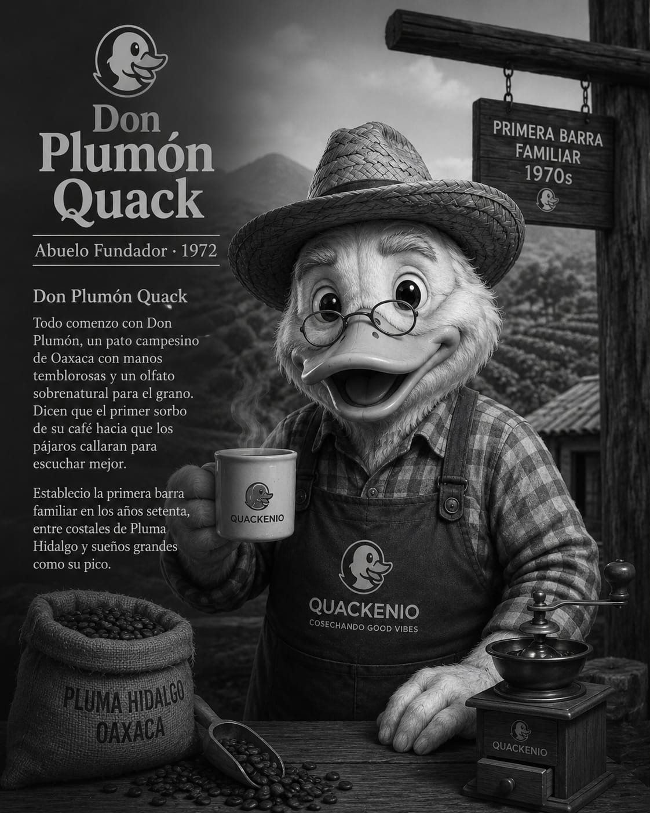
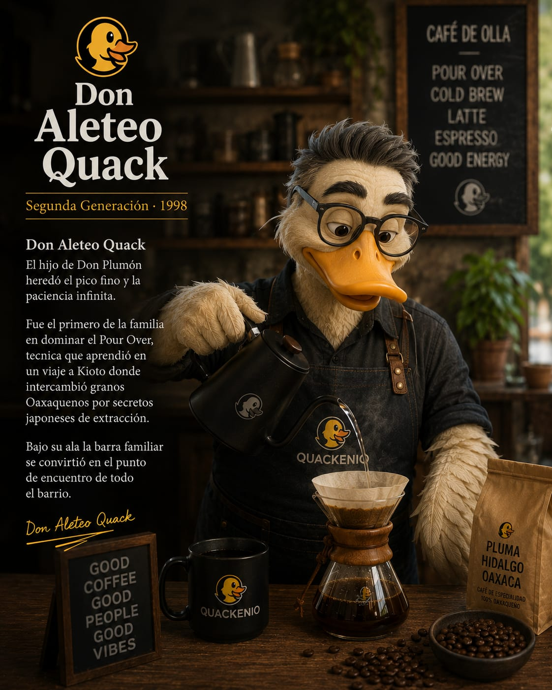
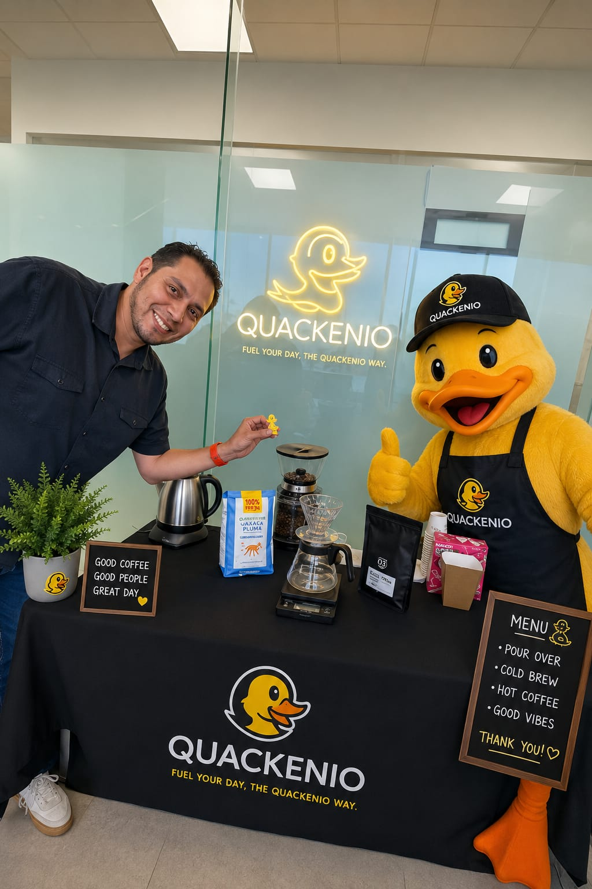
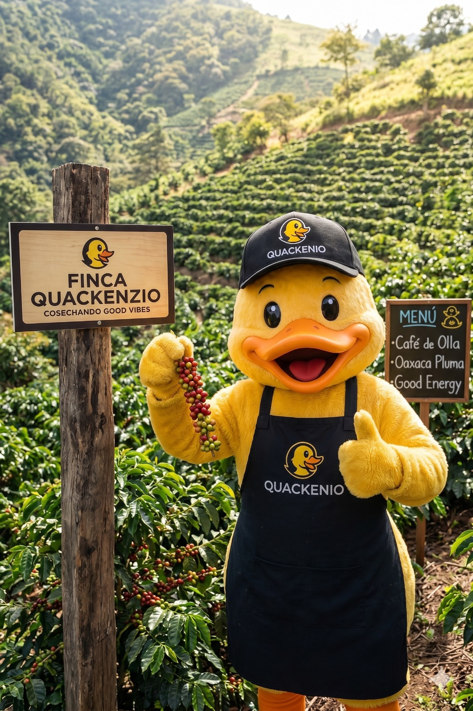
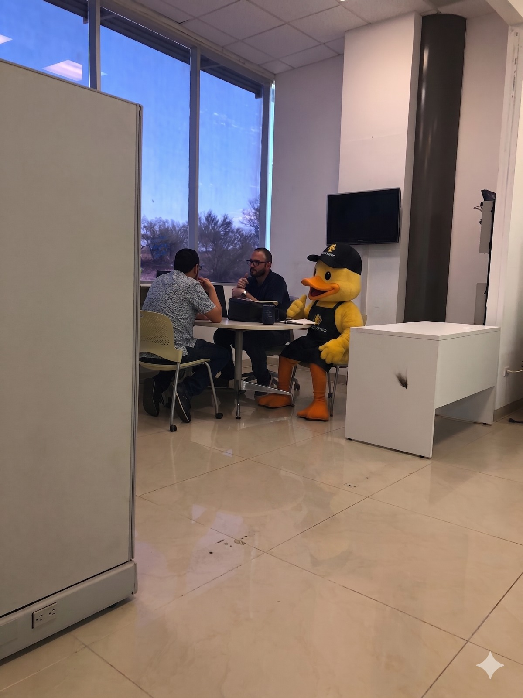
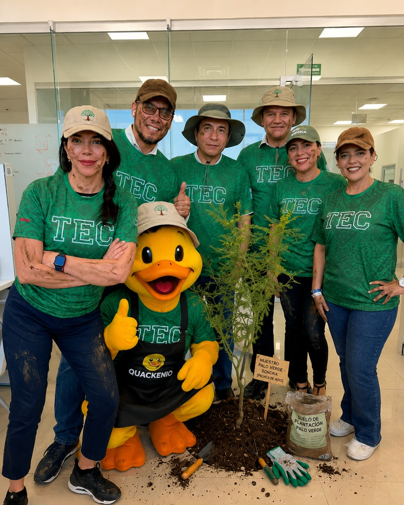

EL LINAJE QUACK
Una familia cuya sangre sabe a espresso

Don Plumón Quack
Abuelo fundador de la casa Quack. Su historia completa vive en su retrato, donde comienza la leyenda cafetera de 1972.

Don Aleteo Quack
Segunda generación del linaje. En su retrato se cuenta cómo llevó la técnica familiar a otro nivel y preparó el camino para Orlando.
ORLANDO Y EL ELEGIDO
El día que un pato vio potencial donde nadie más miraba
Orlando Quack — tercera generación, heredero de la barra sagrada — era ya una leyenda en el campus. Sus Pour Overs llegaban a la taza con la precisión de un reloj suizo y el alma de una canción de cuna. Pero Orlando sabía algo que su familia aún no comprendía: el don del café no corre solo por la sangre de los patos.
Un martes ordinario, entre el vapor del hervidor y el aroma del Oaxaca Pluma, apareció Quackencio. Un humano. Sin linaje de plumas, sin tradición familiar, sin idea alguna de la diferencia entre un Chemex y un Kalita. Solo tenía hambre de aprender y una sonrisa que encendía el salón.
Orlando lo miró fijo. Ladeó la cabeza. Y cuack.
Ese cuack lo decía todo. Ese día, el pato tomó al humano bajo su ala.

Orlando y Quackencio — la barra, el pato, el destino.
LA FINCA QUACKENZIO
Cosechando good vibes desde el origen

Finca Quackenzio, Oaxaca — donde nace cada taza.
Antes de tocar la máquina, Orlando tenía una regla de oro heredada de Don Plumón: primero conoce el grano, luego hazlo cantar.
Llevó a Quackencio hasta las laderas de Oaxaca, a la finca familiar donde crecen los cafetos del Pluma Hidalgo bajo la sombra de árboles nativos. Orlando levantó un racimo de cerezas rojas con el ala y lo acercó a la nariz del aprendiz. "Huele. Eso es chocolate, durazno y promesa."
Quackencio cerró los ojos. Cuando los abrió, ya entendía todo. No se trataba de técnica. Se trataba de respeto al origen.
La finca sigue siendo el corazón de Quackenio. Cada batch de granos llega directamente de productores comprometidos con la calidad y la tierra.
EL ENTRENAMIENTO CUACKTACULAR
No fue fácil. Los mejores caminos nunca lo son.
Primer Cuack: El Es-pato-sso
Orlando colocó a Quackencio frente a la máquina. El primer shot salió amargo como una ruptura. Orlando meneó la cabeza. Cuack. Lo intentaron veintisiete veces hasta que la crema fue perfecta. Quackencio lloró un poco. Orlando fingió no verlo.
Segundo Cuack: El Pour Over
La técnica del vertido circular que Don Plumón transmitió a Don Aleteo y Don Aleteo a Orlando, ahora pasaba por primera vez a manos humanas. Orlando guiaba la jarra con su ala, Quackencio seguía con dedos torpes pero corazón preciso. El resultado: flores de miel y durazno en cada taza.
Tercer Cuack: El Cold Brew Cuacksico
Dieciocho horas de espera. Orlando le enseñó que el buen café, como los buenos patos, no se apresura. Quackencio aprendió la paciencia. Y cuando por fin probaron el Cold Brew juntos al amanecer, ambos supieron que algo grande estaba naciendo.
EL PLAN MAESTRO
Toda gran barra empieza con una gran junta
Con el entrenamiento terminado y los granos de la finca asegurados, llegaba el momento más temido y más emocionante: sentarse a planear el negocio.
Orlando apareció en la sala de juntas con su gorra Quackenio bien puesta, una libreta llena de anotaciones en clave pato y una taza de Ala-tte en la mano. Quackencio llegó con la laptop. El equipo se miró. Nadie dijo nada. Orlando cuackeó dos veces.
"Eso significa: empecemos", tradujo Quackencio.
En esa mesa nacieron el nombre, el menú, los precios, la filosofía y el primer boceto del logo. Dos horas después, la historia de Quackenio ya tenía forma. Solo faltaba abrir la barra.

La junta donde todo Quackenio tomó forma.
ASÍ NACIÓ QUACKENIO
"No importa si eres pato o humano. Lo que importa es cómo tratas el grano." — Orlando Quack, Maestro Barista
Cuando Quackencio ya dominaba cada técnica, Orlando lo miró una última vez con esa inclinación de cabeza que lo decía todo. Cuack suave. El de la aprobación. Juntos abrieron la barra. Le pusieron el nombre que lleva el legado de tres generaciones y el espíritu del humano que se atrevió a creer en un pato. Quackenio.
MÁS ALLÁ DEL CAFÉ
Buenas vibras que van más allá de la taza

Plantando un Palo Verde Sonora — porque las buenas raíces también se siembran.
Quackenio no es solo una barra de café. Es una forma de ver el mundo: con buena onda, con propósito y con las alas bien abiertas.
Orlando fue el primero en decirlo: si el grano viene de la tierra, algo le debemos a ella. Por eso el equipo Quackenio participa activamente en voluntariados de reforestación en el campus del Tec de Monterrey, plantando especies nativas de Sonora como el Palo Verde.
Con tierra en las manos y café en el alma, el pato apareció con su delantal Quackenio, pala en ala y pulgar arriba. Porque si algo aprendió Don Plumón en Oaxaca es que un buen barista también cuida donde crece el grano.